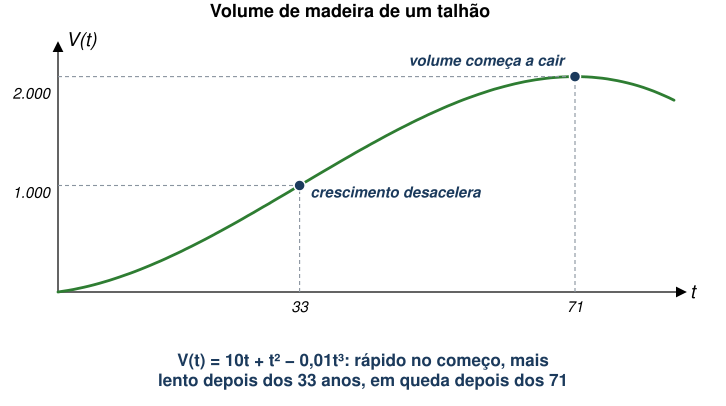
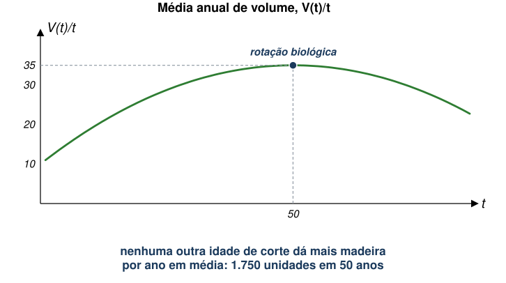
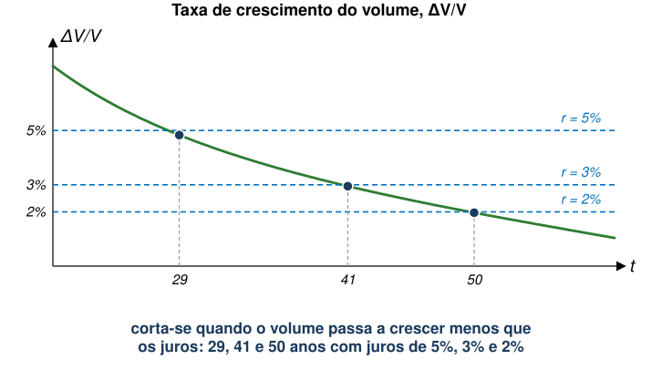
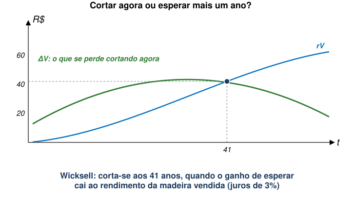
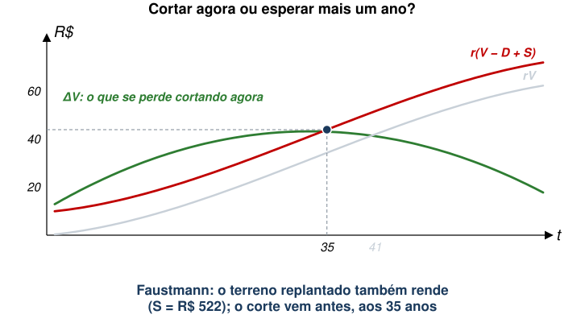
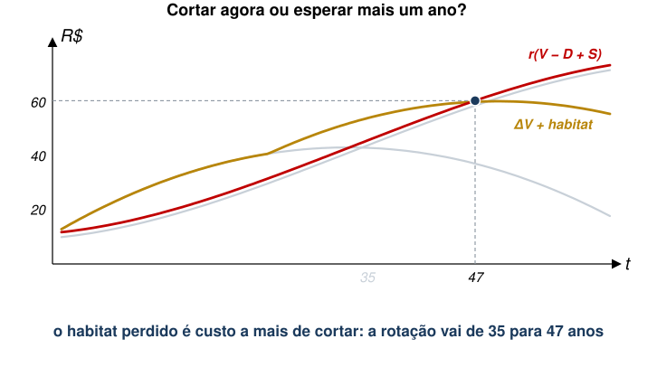
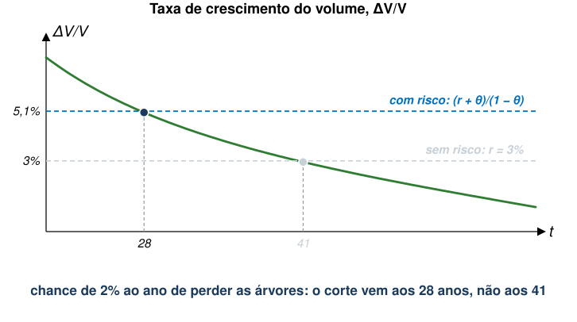
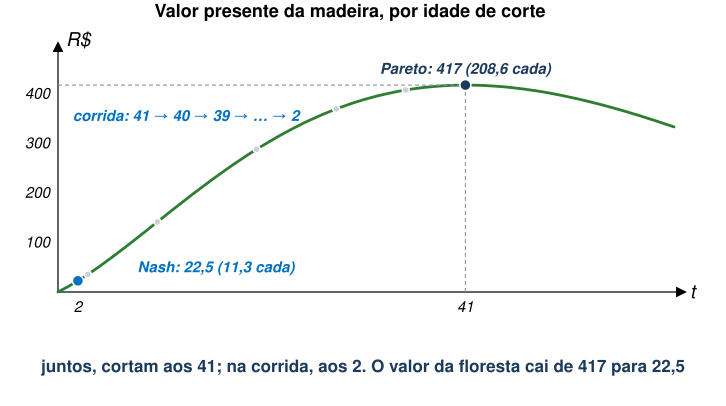
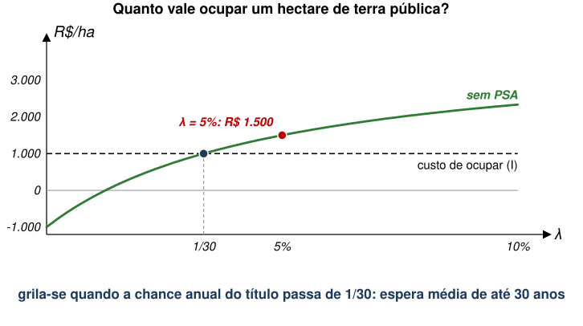
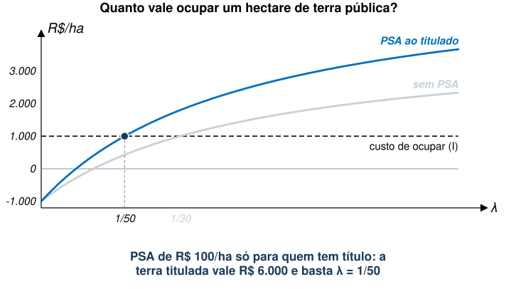

EAE1317 — Economia do Meio Ambiente e dos Recursos Naturais
2026-11-05
Referência: Keohane e Olmstead (2016), cap. 7
Comportamento predatório em relação a recursos comuns está associado à falta de mecanismos de cooperação.
Como viram em cursos de Micro, comportamento estratégico sem cooperação pode levar a resultado ineficiente.
| Dona Florinda: Confessar | Dona Florinda: Negar | ||
|---|---|---|---|
| Quico | Confessar | 2 , 2 | 0 , 5 |
| Negar | 5 , 0 | 1 , 1 |
Exemplos:
Muitos recursos renováveis são de acesso livre ou de propriedade comum.
Além disso, o estoque de um recurso renovável é limitado, mas não é fixo.
Árvores em pé são ativos de capital, que ganham valor à medida que crescem em volume.
Duas diferenças em relação aos recursos não-renováveis:
Volume de madeira de um talhão de árvores homogêneas como função do tempo:
\[V(t) = 10t + t^2 - 0{,}01t^3\]

Esta rotação se baseia na idade de corte que maximiza o incremento médio anual, \(V(t)/t\).

A rotação biológica maximiza o volume de madeira, mas não necessariamente o benefício líquido do talhão para a sociedade.
Primeiro passo: suponha uma única colheita, ignorando o que acontece com a terra depois.
A cada ano, compara-se o retorno líquido de cortar agora com o de esperar mais um ano.
\[(p-c)\,V(T_0)\,(1+r) = (p-c)\,V(T_1)\]
Rearranjando:
\[\frac{V(T_1)-V(T_0)}{V(T_0)} = \frac{\Delta V}{V(T_0)} = r\]
A regra de Wicksell é uma condição de não arbitragem, como a regra de Hotelling.

Ainda falta, no entanto, o custo da terra onde as árvores crescem. O problema da rotação é, na verdade, um problema de uso da terra.
Valor do terreno (\(S\)): valor da terra florestada supondo rotação eficiente para sempre, ou conversão ao uso mais lucrativo quando a floresta deixar de sê-lo.
Com o valor do terreno (\(S\)) e o custo de replantio (\(D\)):
\[(p-c)\,V(T_0) - D + S = \frac{(p-c)\,[V(T_0)+\Delta V] - D + S}{1+r}\]
Medindo \(V\) pelo valor líquido, \((p-c)V\), a equação vira:
\[r\,[V(T_0)-D] + rS = \Delta V\]
Rearranjando:
\[r = \frac{\Delta V}{V(T_0)-D+S}\]
Hipóteses: preço líquido de R$ 1 por unidade e juros de 3% ao ano.

\(S\): valor da terra logo após o replantio, com corte a cada período de \(T\) anos, para sempre.
\[S = \frac{V(T) - D + S}{(1+r)^T}\]
Isolando \(S\):
\[S = \frac{V(T) - D}{(1+r)^T - 1}\]
Hipótese adicional: replantio custa R$ 200. O valor do terreno, então, depende da rotação escolhida.
| Rotação, T | Madeira, V(T) | Terreno, S |
|---|---|---|
| 25 anos | 719 | R$ 474 |
| 30 anos | 930 | R$ 511 |
| 35 anos | 1.146 | R$ 522 |
| 41 anos (Wicksell) | 1.402 | R$ 509 |
| 50 anos (biológica) | 1.750 | R$ 458 |
Com \(S\) = R$ 522, compara-se \(r(V - D + S)\) com \(\Delta V\).

Em geral, a rotação de Faustmann é a mais curta das três.
| Rotação | Critério | Idade de corte |
|---|---|---|
| Biológica | máximo do volume médio anual | 50 anos |
| Wicksell | crescimento do volume = juros | 41 anos |
| Faustmann | retorno sobre madeira e terra = juros | 35 anos |
Juros de 3% ao ano, preço líquido de R$ 1 por unidade de volume, replantio de R$ 200.
Florestas oferecem benefícios além da madeira: habitat de espécies, proteção de bacias hidrográficas, sequestro de carbono, recreação.
Exemplo: habitat de aves que só existe em talhões velhos.
Habitat que vale R$ 1 por ano para cada ano de idade do talhão acima de 25:

Segundo a FAO, o mundo perdeu 13 milhões de hectares de floresta por ano entre 2000 e 2010. As maiores perdas líquidas estão nos trópicos.
Com terra privada e mercados completos, parte do desmatamento é uso eficiente de um recurso escasso: a terra.
| Região | Florestas públicas |
|---|---|
| EUA (2008) | 44% (56% privadas) |
| África | cerca de 83% |
| Sul e Sudeste Asiático | 92% |
Dois fatores enquadram o desmatamento do ponto de vista econômico:
Direitos bem definidos importam ainda mais em florestas, porque rotações ótimas podem ser muito longas.
Gestão eficiente da floresta depende de conseguir regular quem corta e quando.
Suponha que, a cada ano, há uma chance \(\theta\) de perder árvores por conta de extração ilegal. Assim, esperar um ano rende só \((1-\theta)\) da madeira do ano seguinte.
\[V(T_0)\,(1+r) = (1-\theta)\,V(T_1)\]
Rearranjando:
\[\frac{\Delta V}{V(T_0)} = \frac{r+\theta}{1-\theta} \approx r + \theta\]
Juros de 3% ao ano e chance de 2% ao ano de perder as árvores.

De onde vem o risco \(\theta\)? Muitas vezes, de quem tem acesso à mesma floresta.
Hipóteses: (i) volume \(V(t)\); (ii) preço líquido de R$ 1; (iii) juros de 3% ao ano; e (iv) apenas um corte.
Se decidissem juntos, maximizariam o valor da madeira: é a rotação de Wicksell.
Mas a cooperação se sustenta?
Dado que o vizinho (Agente 2) vai esperar até os \(T\) anos, qual é a melhor resposta do Agente 1? Esperar e dividir, ou cortar um ano antes e levar tudo?
\[\underbrace{V(T-1)\,(1+r)}_{\text{cortar antes, sozinho}} \quad\text{contra}\quad \underbrace{\tfrac{1}{2}\,V(T)}_{\text{esperar e dividir}}\]
A melhor resposta do Agente 2, no entanto, é antecipar e cortar aos 39. Então, a melhor resposta do Agente 1 passa a ser 38. E assim por diante.
| Idade de corte do vizinho | Cortar um ano antes, sozinho | Esperar e dividir | Melhor resposta |
|---|---|---|---|
| 41 anos | 1.400,8 | 700,9 | 40 anos |
| 28 anos | 826,2 | 422,2 | 27 anos |
| 10 anos | 168,6 | 95,0 | 9 anos |
| 3 anos | 24,6 | 19,4 | 2 anos |
| 2 anos | 11,3 | 12,0 | 2 anos |
Valores estão medidos no ano em que o outro corta; juros de 3% ao ano.
Curva do valor da madeira vai se deslocando para baixo com a corrida.

A condição para antecipar é a regra das árvores sem direito garantido, com \(\theta = 1/2\):
\[V(T_0)\,(1+r) = (1-\theta)\,V(T_1), \qquad \theta = \tfrac{1}{2}\]
Com muitos vizinhos, a árvore é de quem cortar primeiro: acesso livre. Esperar só rende a quem tem a colheita garantida.
| Chance anual de perder as árvores, θ | 0 | 2% | 10% | 50% (dois vizinhos) |
|---|---|---|---|---|
| Idade de corte | 41 anos | 28 anos | 11 anos | 2 anos |
Juros de 3% ao ano; volume \(V(t)\) desta aula.
É a tragédia dos comuns, em que cada um corta cedo demais porque, se esperar, o vizinho corta. A renda da terra florestada se perde.
Acesso livre: nenhuma restrição a quem usa o recurso ou a quanto extrai. Propriedade comum: recurso compartilhado por um grupo (uma vila, por exemplo), sob regras formais ou normas informais.
Arranjos bem-sucedidos dependem da autorregulação dos usuários, que evitam agir de forma oportunista (Ostrom 1990).
No entanto, direitos mais seguros também aumentam o retorno de usos da terra que competem com a floresta.
Ou seja, direitos de propriedade sozinhos não bastam. Duas respostas comuns:
Primeira resposta. No modelo de rotação, uma área protegida é a rotação infinita imposta por lei: nunca cortar.
Ou seja, proteger no papel não basta: a área precisa ser fiscalizada e estar onde o desmatamento aconteceria.
Segunda resposta. Desde 2003, o governo do México paga proprietários para manter a cobertura florestal.
| Programa de Pagamentos por Serviços Hidrológicos | |
|---|---|
| Área inscrita, 2003 a 2011 | 2,6 milhões de hectares |
| Perda de cobertura florestal evitada, 2003 a 2012 | 40% a 51% |
Grilagem: toda ação que visa obter a posse ou a propriedade da terra por meio de ato ilícito.
O ciclo descrito para a Amazônia:
No México, o PSA paga a proprietários. E quando não está claro quem é o dono?
Fonte: Brito et al. (2021).
| Amazônia | |
|---|---|
| Florestas públicas não destinadas | 56 milhões de hectares |
| Parcela registrada no CAR como imóvel privado | cerca de um quarto |
| Desmatamento anual que ocorre em florestas não destinadas | de 12% (2016) para 32% (2020) |
| Área do CAR com mais de uma reivindicação, 2021 | 16% (35,4 milhões de hectares) |
| Preço da terra pública vendida, em relação ao mercado | 15% (estados) e 26% (União) |
As leis de regularização definem até quando uma ocupação de terra pública pode ser titulada. Esse prazo muda.
Ou seja, prazos já alterados criam a expectativa de que terra ocupada e desmatada hoje seja legalizada no futuro.
O Cadastro Ambiental Rural (CAR), de 2012, é autodeclaratório: o próprio ocupante informa os limites do imóvel.
Terra pública sem destinação se aproxima do acesso livre: a corrida não é só pela madeira, mas pela própria terra.
Versão simplificada de um modelo de opções reais (Pereira et al., 2026): quem grila decide hoje se vale ocupar.
É a mesma família de problemas das rotações: escolher o momento de agir quando o retorno vem no futuro.
Valor da posse hoje, \(W_G\): lucro do ano mais o que a terra vale no ano seguinte, descontado.
\[W_G = \frac{\pi_G + \lambda\, W_O + (1-\lambda)\, W_G}{1+r}\]
Isolando \(W_G\):
\[W_G = \frac{\pi_G + \lambda\, W_O}{r + \lambda}\]
| Parâmetro | Valor |
|---|---|
| Juros, r | 5% ao ano |
| Chance anual de título, λ | 5% (espera média de 20 anos) |
| Terra titulada, WO | R$ 4.000/ha (renda de R$ 200/ha por ano) |
| Lucro da ocupação, πG | −R$ 50/ha por ano |
| Custo de ocupar, I | R$ 1.000/ha |
Quanto maior a probabilidade anual de titulação, maior o valor da posse.

Pela fórmula, \(W_G\) sobe quando:
Quando os direitos de propriedade não são bem definidos, o PSA pode incentivar a grilagem.
O prêmio do título aumenta: vale mais ocupar hoje à espera dele.
Com \(\psi\) = R$ 100/ha por ano, \(W_O\) vai de R$ 4.000 para R$ 6.000.

PSA eficiente pressupõe saber quem é o dono.
Ou seja, pagar a quem usa um recurso sem dono atrai entrada. Na floresta, entrar é desmatar.
EAE1317 — Economia do Meio Ambiente e dos Recursos Naturais